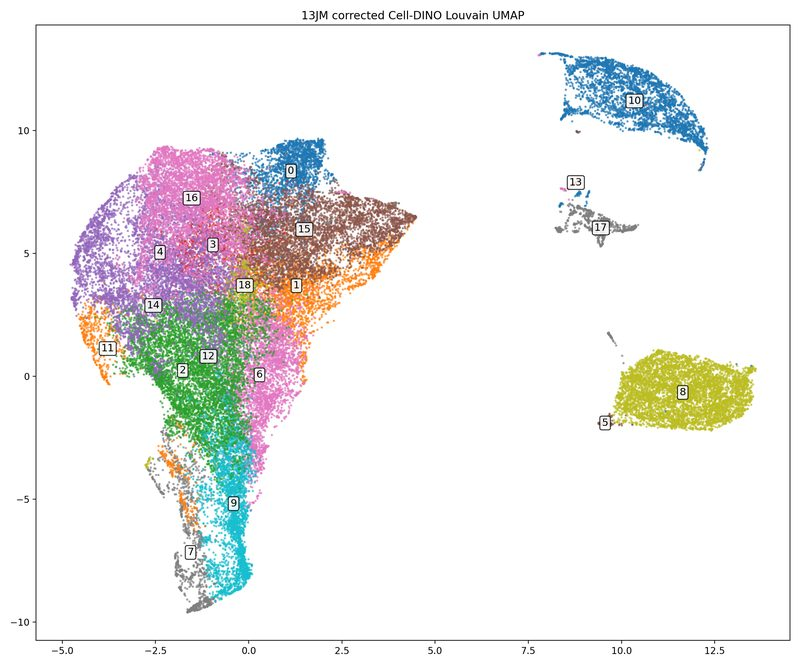
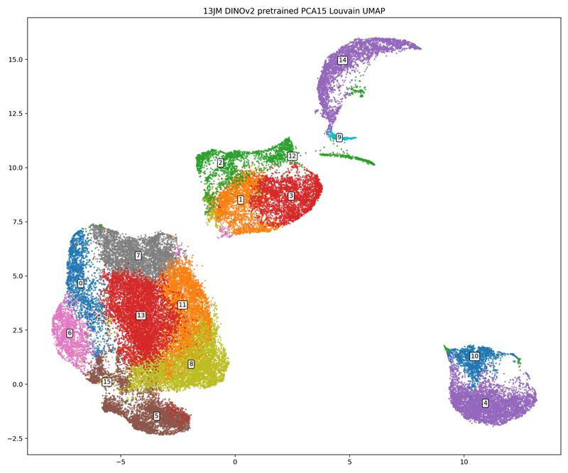
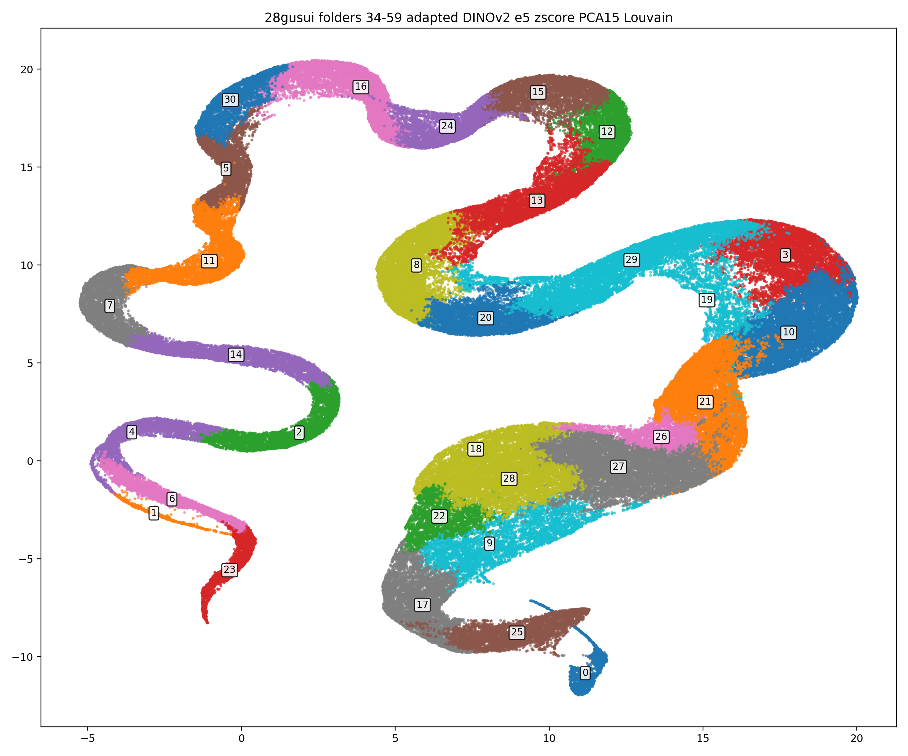
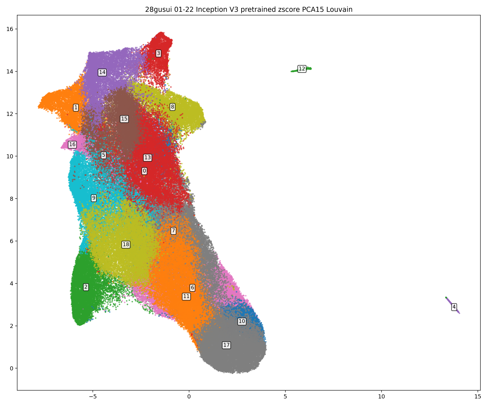
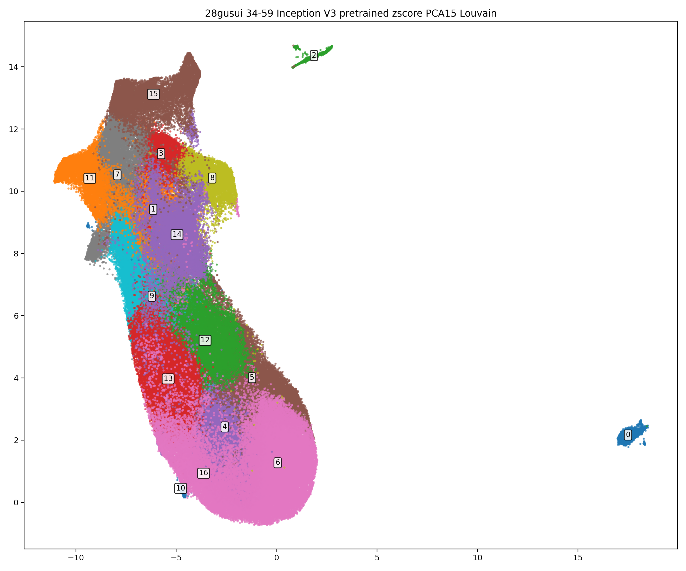
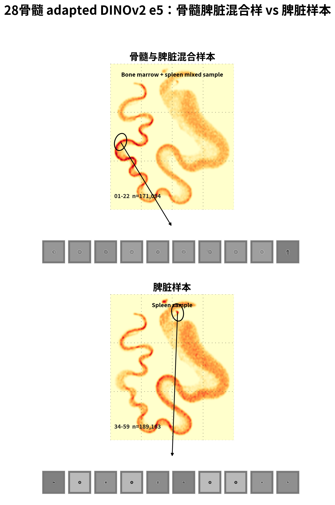
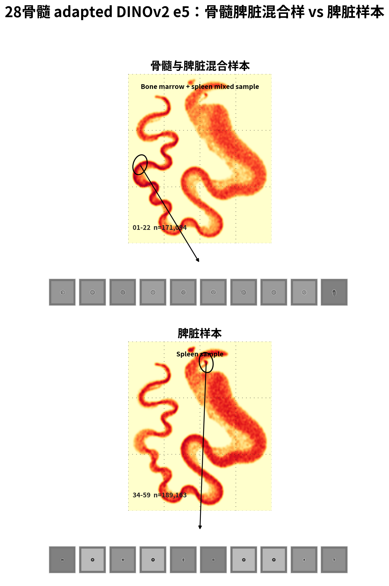

IFC Result Library
细胞聚类结果展示
这里保留主线结果页：每个页面对应一个细胞集和一种方法。页面上方查看 UMAP 聚类结构，下方查看每个 class / cluster 的代表细胞。
2个主要细胞集：13JM 与 28gusui
3条主要表征路线：corrected Cell-DINO、DINOv2 pretrained、DINOv2 adapted
UMAP + cells每页先看全局结构，再看各类示范细胞
标准结果页
优先看这里。旧的分页图库、可编辑筛选页、报告页先收在 archive，避免首页继续变杂。

13JM / corrected Cell-DINO
当前最接近你想要的页面形态：上方 UMAP 标注聚类情况，下方按 cluster 展示最中心代表细胞。

13JM / DINOv2 pretrained
pretrained DINOv2 在 13JM 上的聚类结构。适合和 corrected Cell-DINO 做横向对照。

13JM / DINOv2 adapted from 28gusui e5
使用 28gusui 域自适应后的 DINOv2，再回到 13JM 做聚类，用来观察适配是否改善结构。

28gusui / corrected Cell-DINO
28gusui 主数据集的 corrected Cell-DINO 聚类结果，每类展示中心代表细胞。

28gusui / adapted DINOv2 e5
28gusui 全量 adapted DINOv2 e5 聚类结果。首页看 UMAP，每个 cluster 单独页面随机展示 100 张细胞。

28gusui / pretrained DINOv2
28gusui 全量 pretrained DINOv2 聚类对照。首页看 UMAP，每个 cluster 单独页面随机展示 100 张细胞。

28gusui 01-22 / adapted DINOv2 e5
28gusui 01-22 文件夹的 adapted DINOv2 e5 聚类结果。标准 overview 页：UMAP 后直接按 cluster 展示每类 100 张随机细胞。

28gusui 34-59 / adapted DINOv2 e5
28gusui 34-59 文件夹的 adapted DINOv2 e5 聚类结果。标准 overview 页：UMAP 后直接按 cluster 展示每类 100 张随机细胞。

28gusui 01-22 / pretrained DINOv2
28gusui 01-22 文件夹的原始 pretrained DINOv2 聚类对照。标准 overview 页：UMAP 后直接按 cluster 展示每类 100 张随机细胞。

28gusui 34-59 / pretrained DINOv2
28gusui 34-59 文件夹的原始 pretrained DINOv2 聚类对照。标准 overview 页：UMAP 后直接按 cluster 展示每类 100 张随机细胞。

28gusui 01-22 / pretrained Inception V3
28gusui 01-22 文件夹的 ImageNet pretrained Inception V3 聚类对照。标准 overview 页：UMAP 后直接按 cluster 展示每类 100 张随机细胞。

28gusui 34-59 / pretrained Inception V3
28gusui 34-59 文件夹的 ImageNet pretrained Inception V3 聚类对照。标准 overview 页：UMAP 后直接按 cluster 展示每类 100 张随机细胞。

28gusui / 骨髓脾脏 UMAP 分布复现
上方为骨髓与脾脏混合样本，下方为脾脏样本；橙红色密度图使用同一颜色标尺，灰色细胞来自黑圈区域。

28gusui / 骨髓脾脏 UMAP 分布复现（非统一尺度）
上方和下方各自把本图最高密度区域显示成最红，适合看每个样本内部的集中区域；灰色细胞仍来自黑圈区域。

28gusui / manual QC labels
人工 QC 标注样本：上方 t-SNE，下方按 usable / uncertain / reject 展示示范细胞。
13JM / 人工确认的已知类别样本
按人工确认的已知类别分组展示 13JM 细胞样本，用于快速审阅每类形态一致性。
Archive
这些页面仍然保留，但不再作为主线入口。